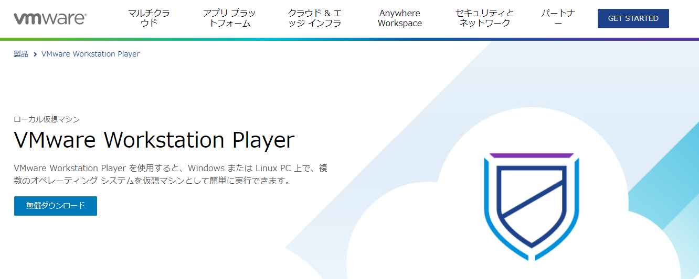
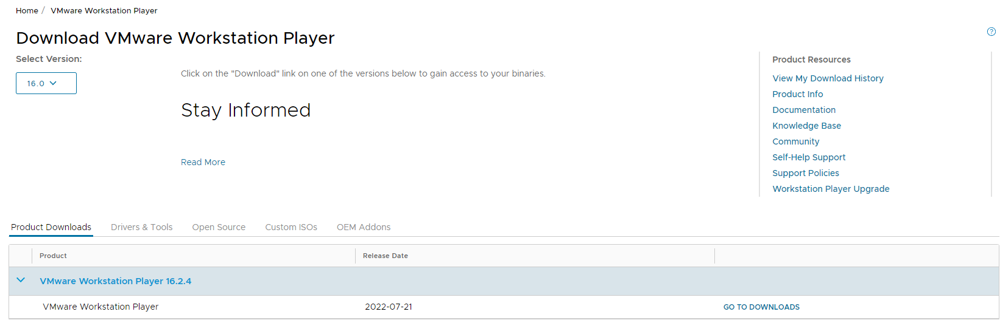
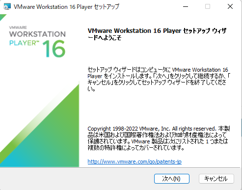
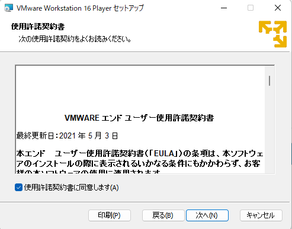
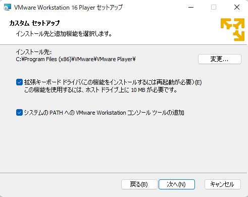
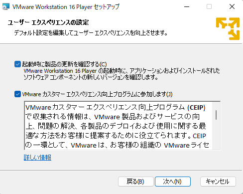
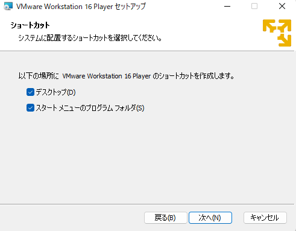
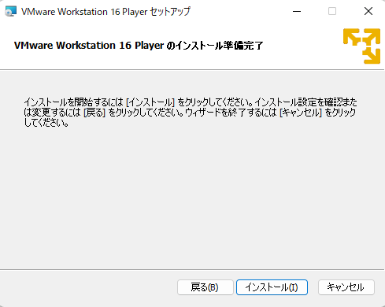
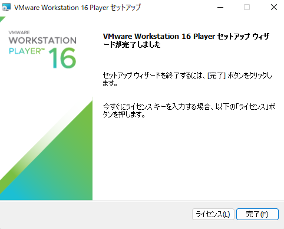

VMwareを使用し、WindowsPCでmacOS環境を構築する(VMwareインストールまで)
はじめに
この記事では、WindowsPCしか持っていないけどmacOS環境を構築したい人向けに、「VMwareを使ったmacOS仮想化の手順（2025年版）」を詳しく解説します。iPhoneアプリの開発など、Macが必要な場面で役立ちます。
本記事の内容は技術検証・個人学習を目的としています。
Appleの公式ライセンス規約では、macOSはApple製ハードウェア以外での使用を禁止しています。
→ Appleソフトウェアライセンス契約
実施はあくまで自己責任でお願いします。
実施PCスペック
プロセッサ Intel(R) Core(TM) i7-9700K CPU @ 3.60GHz 3.60 GHz
実装 RAM 16.0 GB
エディション Windows 11 Home
VMwareのダウンロード

VMWareの公式サイト（https://www.vmware.com/jp/products/workstation-player.html）
無償でダウンロードすることができる。

「GO TO DOWNLOADS」をクリックする。

「VMware Workstation 16.2.4 Player for Windows 64-bit Operating Systems」を「DOWNLOAD NOE」をクリックし、ダウンロードを開始する。
「VMware-player-full-16.2.4-20089737.exe」がダウンロード出来たら起動する。

システムの変更を承認した後、セットアップの最初の画面が表示されるため、「次へ」をクリックする。

チェックボックスにチェックを入れた後、「次へ」をクリックする。

「拡張キーボードドライバ～」のチェックボックスにチェックを入れ、「次へ」をクリックする。
VMware上で稼働するWindows上でPCのキーボードからWindowsにコマンドを使えるようになる。
これをインストールしないと、VMWareが稼働するPC本体側のWindowsにコマンドが送信されてしまう。
必要に応じてチェックを入れるかどうか判断する。

「次へ」をクリックする。

「次へ」をクリックする。

セットアップの準備が完了したので、「インストール」をクリックする。

この画面が表示されたらインストール完了。
「拡張キーボードドライバ～」のチェックボックスにチェックを入れたため、再起動を求められ再起動するとVMwareインストールまで完了。
次へ
以上が、2025年最新の「WindowsPCでmacOSを構築する方法」です。VMwareを使えば、MacがなくてもiPhoneアプリ開発などが可能になります。ぜひチャレンジしてみてください。
記事が長くなってしまうため、インストール完了まででこの記事は終わろうと思う。
VMwareでのmacOS環境構築については次の記事で投稿する。
続きの記事
VMwareを使い、WindowsでmacOS環境を構築する(macOS仮想マシン作成)
よくある質問
WindowsPCにmacOSを入れるのは違法ですか？
Appleのライセンス違反になる可能性がありますのでご注意ください。個人検証の範囲で行いましょう。
VMwareでmacOSを動かすメリットは？
iPhoneアプリ開発やXcodeの学習に役立ちます。